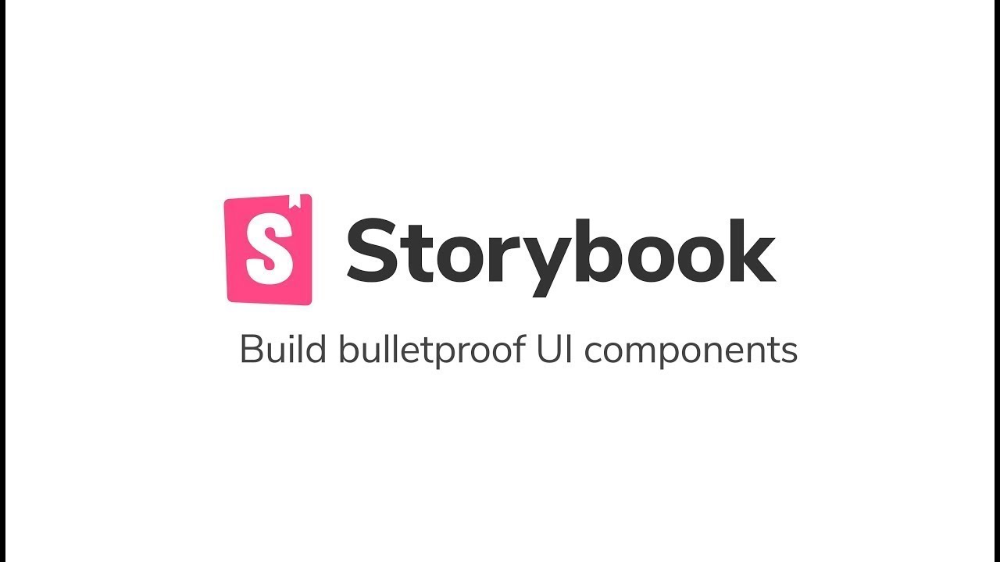

본 포스트는 MacOS 10.15.7 을 기준으로 작성하였습니다.

필자는 직접적으로 React를 다루면서 Storybook 프로젝트를 다뤄본 적이 없었다. 팀 내 어플리케이션 개발을 위해서는 팀 공용 컴포넌트를 사용하고 있지만 필자는 단지 써보기만 할 뿐 직접 컴포넌트를 작성한 적이 없다. 팀 공용 컴포넌트는 Storybook으로 이루어져 있어서 컴포넌트 사용전에 다양한 테스트겸을 할 수 있게 된다. 이러한 이유로 컴포넌트 작성을 위해서 Storybook을 직접 공부하기로 한 계기가 되었다.
서론이 길어졌고 이번에 다뤄볼 포스팅은 React 라이브러리로 완전히 컴포넌트로 독립시킬 수 있는 Storybook이다. UI 환경 구성을 직접 수정가능하며 플레이 그라운드 형식으로 다양한 컴포넌트를 시도해볼 수 있는 것이 장점이다. 사실상 Storybook을 사용하지 않고 한 프로젝트 안에서 직접 컴포넌트들을 분류하여 작성하는 방법도 있지만, 다중 어플리케이션 혹은 공통으로 사용되는 컴포넌트들을 관리하는데 규격을 맞춰줄 수 있는 매력적인 라이브러리이다.
그렇다면 실제로 Storybook을 이용해 컴포넌트를 작성하고 넣기까지 해보도록 하겠다. 이번에도 직접 만든 프로젝트를 레퍼런스하도록 URL을 추가하였다. 이번 Storybook의 컴포넌트는 이전 Material-ui 프로젝트들의 컴포넌트를 그대로 가져와 사용하도록 해보았다. 해당 프로젝트로 같이 추가하겠다.
Material-UI example repository (Freez Github) : react-material-ui-project
StoryBook example repository (Freez Github) : ui-storybook
설치
우선 기본적인 설치부터 시작해보도록 하겠다. 우선은 Create-React-App을 이용해 프로젝트를 작성했다면 Storybook 라이브러리를 추가해주도록 하자.
1
npm install -g @storybook/cli
Storybook은 고유 커맨드를 가지고 있어 라이브러리를 설치하는 것만으로는 프로젝트에 적용되지 않는다. 지금 설치하는 것은 단순히 Storybook을 환경변수에 설치하는 용도로 생각하면 된다. 그렇게 되면 이제 실제로 프로젝트에 적용시키기 전에 설치가 되었나 버전을 확인하도록 하자.
1
2
> getstorybook -V
6.0.26
버전이 최신 버전으로 설치가 되었다면 직접 적용이 가능하다. React 프로젝트에 들어가 해당 명령어를 입력해보자.
1
getstorybook init
이렇게 입력하면 StoryBook 내에서 React 프로젝트의 상태를 인식하고 자동으로 Storybook 작성에 필요한 여러가지 파일들을 생성해줄 것이다. 완료 메시지가 뜬다면 해당 React 프로젝트 내에서 Storybook을 사용할 수 있게 되었다.
여기서 주목해야하는 파일이라면 src/stories 폴더의 파일들이다. 처음 생성했을 때의 파일 트리는 다음과 같다.
1
2
3
4
5
6
7
8
9
10
11
12
13
14
15
16
17
18
19
20
└── stories
├── Button.js
├── Button.stories.js
├── Header.js
├── Header.stories.js
├── Introduction.stories.mdx
├── Page.js
├── Page.stories.js
├── assets
│ ├── code-brackets.svg
│ ├── colors.svg
│ ├── comments.svg
│ ├── direction.svg
│ ├── flow.svg
│ ├── plugin.svg
│ ├── repo.svg
│ └── stackalt.svg
├── button.css
├── header.css
└── page.css
React의 기본적인 컴포넌트들로 생성되어 Example File로 구성되어 있다. 이제 각각의 컴포넌트를 스토리에 집어넣어보도록 하겠다.
스토리 작성
컴포넌트를 작성했다면 Stories 폴더 안에 스토리를 작성할 수 있다. 필자는 이전에 작성한 Material-UI의 컴포넌트들을 이용해보도록 하겠다. 하지만 코드 그대로를 쓰지 않고 조금 변형해서 사용하지만 사용에는 큰 문제는 없다. 컴포넌트 중에 버튼 컴포넌트를 추가해보도록 하겠다. 우선 스토리에 작성하기 위한 컴포넌트 코드를 수정해보았다.
1
2
3
4
5
6
7
8
9
10
11
12
13
14
15
16
17
18
19
20
21
22
23
24
25
26
27
28
29
30
31
32
33
import React from "react";
import { makeStyles } from "@material-ui/core/styles";
import PropTypes from "prop-types";
import { Button } from "@material-ui/core";
const buttonStyle = makeStyles((theme) => ({
large: {
width: 256,
},
medium: {
width: 164,
},
small: {
width: 75,
},
}));
export const ButtonComponent = ({ ...props }) => {
const { text, size, onClick } = props;
const sizeStyle = buttonStyle();
return (
<Button
variant="contained"
style={ borderRadius: 20, marginRight: 20, padding: "10px 5%" }
color="Secondary"
className={sizeStyle[size]}
onClick={onClick}
>
{text}
</Button>
);
};
기존에 Material-UI에 작성한 컴포넌트를 그대로 가져와서 스토리에 작성해보도록 하겠다. 이때 스토리의 작성 파일명은 컴포넌트명.stories.js 로 작성해주어야 한다. 이런 포맷 방식은 ./storybook/main.js 에서 바꿀 수 있으니 참조하기 바란다. 이렇게 스토리 추가를 위한 파일명으로 필자는 컴포넌트명과 동일하게 ButtonComponent.stories.js 로 작성해보았다. 물론 stories 파일에 넣는 것은 잊지 말아야 한다.
해당 소스 코드는 다음과 같다.
1
2
3
4
5
6
7
8
9
10
11
12
13
14
15
16
17
18
19
20
21
import React from "react";
import { ButtonComponent } from "../component/Atoms/ButtonComponent";
export default {
title: "Atoms/ButtonComponent",
component: ButtonComponent,
argTypes: {
text: { control: "text" },
size: { control: "text" },
onClick: { control: "" },
},
};
const Template = (args) => <ButtonComponent {...args} />;
export const Primary = Template.bind({});
Primary.args = {
text: "text",
size: "small",
onClick: "",
};
소스 분석에 들어가보도록 하겠다. 우선 기본적으로 꼭 필요한 것은 export default, export const Primary 의 내용들이다. 위의 default는 스토리의 설정을 나타낸다.
title은 컴포넌트 명이며 여기서 / 를 통해 카테고리 형성이 가능하다. 때문에 같은 카테고리 안에 여러가지 컴포넌트를 넣을 수 있는 것이 가능하다.
component는 파라미터에 아무것도 지정하지 않은 단순한 컴포넌트의 형태를 가져오는 것이다.
argTypes는 컴포넌트에 필요한 인수와 타입을 작성하는 것이다. 여기서 text 혹은 size 같이 글자로 작성해야하는 타입 혹은 다른 타입을 control키에서 변경이 가능하다.
그리고 각 const의 export는 예시 컴포넌트를 보여준다. 예를 들어 Primary라는 이름을 가진 버튼 컴포넌트에는 이런 글자에 사이즈는 이렇게로 지정하면서 컴포넌트들을 이렇게 사용할 수 있다는 것을 표시하기 위한 기능이라고 볼 수 있다.
스토리북 실행
이제 간단한 스토리도 작성을 했다면 스토리북을 실행해볼 시간이 왔다. 스토리북의 실행 명령어는 기존의 npm start 와는 다른 고유의 명령어를 사용한다. 물론 이것은 package.json 에서 변경이 가능하다.
1
npm run storybook
이 코드를 작성하고 스토리 북을 진행해주면 스토리북 화면을 보여주게 된다. url은 https://localhost:6006으로 사용한다. 실행 화면은 다음과 같다.
위 화면은 여러가지 스토리를 만들어서 나온 화면이지만 내부 화면은 이와 같다. 이렇게 여러가지 스토리를 넣어서 컴포넌트의 플레이그라운드를 제공하며 컴포넌트를 좀 더 효율적으로 활용가능한 라이브러리로서 좋지 않나 싶다.